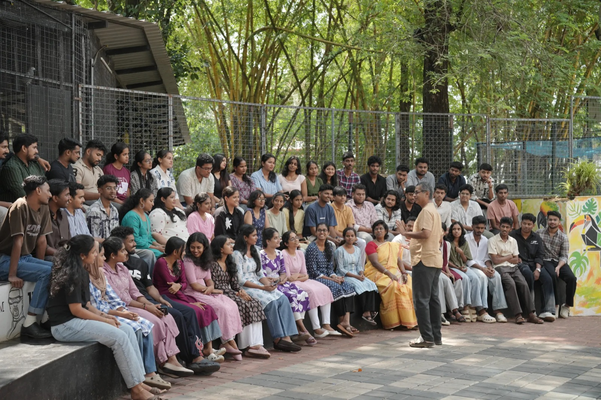

Students & young professionals
Build the self-awareness and clarity to make thoughtful choices as you begin your academic or professional journey.

A flagship LEAD experience · Seven days
A residential journey to look inward, meet new challenges and put purposeful change into action — conceived and led by Dr. Thomas George K.
About the programme
Turning Point is a seven-day immersive experience that brings together reflective learning, practical challenges and deep group dynamics. Participants learn by doing, make time to reflect, and practise applying new insights in real time.
The aim is an inner shift: greater self-awareness, a clearer sense of purpose and a personal action plan that lasts beyond the programme.
Every individual possesses untapped potential that can be activated through awareness, discipline, and purpose.
Vision & philosophy
Modern education and professional life often focus on knowledge and skills, while leaving less room to examine mindset, values, discipline and self-awareness. Turning Point creates that space for honest reflection and purposeful action.
Examine beliefs, habits and attitudes
Recognise strengths, fears and aspirations
Move from passive learning to active change
Connect personal ambition with social responsibility
The experience
From arriving with an open mind to leaving with a commitment you can put into practice.
Meet the group, settle into the residential experience and set an intention for the days ahead.
Reflect on personal values, core strengths and the stories that shape identity and behaviour.
Explore limiting beliefs and practise accountability, growth and possibility thinking.
Consider leadership as a responsibility grounded in values, discipline and empathy.
Take on experiential challenges that invite resilience, trust and teamwork.
Define personal and professional goals connected to a larger sense of purpose.
Leave with a personal action plan, renewed energy and a commitment to follow through.
Who it’s for · Open to people 18+
Different ages, roles and experiences make the shared learning richer. A residential programme at LEAD College, Dhoni, Palakkad.
Build the self-awareness and clarity to make thoughtful choices as you begin your academic or professional journey.
Reconnect leadership with values, discipline and empathy, beyond skills and strategy.
Strengthen resilience and reconnect your work with a purpose that matters beyond profit.
Deepen self-awareness and bring renewed intention to the people and communities you serve.
What you gain
Four dimensions of growth, brought together through experience, reflection and practice.
A
B
C
D
Journey through the years
Across industries, generations and geographies, participants return to their organisations and communities with renewed clarity and the courage to lead with purpose.
The programme launches at LEAD College.
Reached across diverse cohorts.
Senior executives and corporate leaders join.
Recognised as LEAD’s flagship experiential leadership programme.
The programme continues to evolve with every cohort.
Voices from participants
Reflections shared by past participants.
“Turning Point was not just a training programme; it was a deeply transformative experience. It helped me understand my strengths, confront my fears, and take responsibility for my choices.”
“I came expecting a leadership workshop, but what I experienced was much deeper. It reshaped my understanding of leadership as a responsibility rooted in values, discipline, and empathy.”
“Those seven days made me pause and rethink my priorities, my habits, and my aspirations. Turning Point helped me discover a sense of purpose I had never clearly articulated before.”
“As a senior executive, I have attended many leadership programmes. Turning Point stands apart because it addresses the human dimension of leadership — self-awareness, responsibility, and integrity.”
“It challenged me to step outside my comfort zone and discover capabilities I didn’t know I possessed.”
“It made me reflect deeply on who I am, what I want to become, and how I can contribute meaningfully to society.”
Your next chapter starts with a choice
Ask the LEAD team about the next residential cohort.